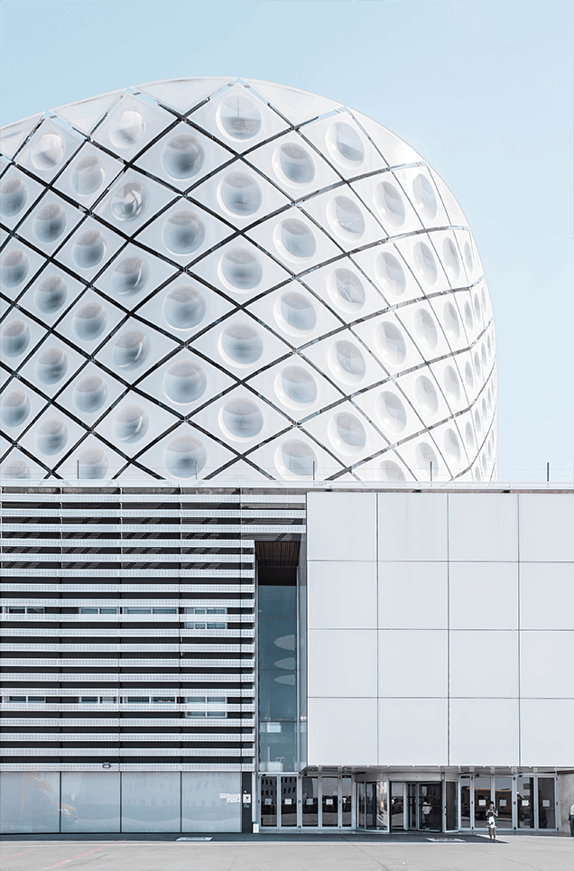

what we do

one world
trade center
Increasing prosperity in our lives can be accomplished by having
the right frame of mind. The truth is, our thoughts are very
powerful. >They are capable of influencing every aspect of our
daily lives, from our physical health to our social behaviors. I’m
sure you’ve heard the adage, “As you think, so shall you be.” If
we want to improve our lives, we must first improve our thoughts.
Harnessing the power of thought in a positive way has the ability
to create great change in our lives, including our financial
well-being and prosperity. But how? How do we take something as
intangible as thoughts, and manifest them into a physical reality?
We must first understand that being prosperous is more than having
a lot of money. Prosperity is a mindset, a way of interacting in
our lives, and a way of thinking. Mastering this train of thought
is not easy, but it is simple enough if we keep working on it
consistently. Following are some ideas to help you improve your
thoughts, and ultimately attract more prosperity into your life:
Be grateful for the blessings in your life right now. Take a few
minutes each day to express heartfelt gratitude for the good
things in your life. Even more powerful, write a few of these
blessings down each day. This helps to put your focus in the right
direction — on abundance, not lack. Use positive affirmations to
begin training yourself to think positively. Use “I am” statements
such as “I am worthy of all that is good.” Write the statements
down and repeat them nightly before bed. Over time, this will
implant these thoughts into your subconscious mind, and you will
begin to naturally believe them. Creative visualization can help
you achieve prosperity by determining what it is you wish to
achieve, and then thoroughly creating that image in your mind.
This works in the same way affirmations do. Our subconscious will
fill with images of prosperity, and eventually these subconscious
“truths” will manifest in the physical. “See” yourself as being
prosperous, and you will become so. Encourage yourself with the
belief that you can achieve great things. This could also be one
of your affirmations, but expand on it. If you know you can earn a
certain salary, tell yourself you can earn more. Allow yourself to
believe all things are possible, and you will gain the confidence
needed to reach higher than you ever imagined you could. If you
believe you can do it, you are more likely to take the risks
associated with people who are highly successful. Prosperity and
success go hand in hand, so take risks and aim higher. Start a
savings account. As strange as it sounds, think about this: Like
Attracts Like. Even if you can only afford to put a few dollars
into your account every month, it will begin to build up and
attract more money. Finally, believe you are already wealthy. The
creative ability of our thoughts is such that we lend more power
and energy to whatever we consistently focus on. Focusing on lack
will create more lack. Focusing on wealth and prosperity will
create . . . guess what? Remember that this is a process. You
likely won’t change your circumstances in one day. But over time,
with consistent focus, your thoughts will begin to attract what
you want. Once you master this power of thought, there are truly
no limits to what you can create!
New York City, United States - 1776 feet
inernational
commerce centre
Successful businesses have many things in common, today we’ll look
at the big ‘R’ of recognition and how a digital advertising
network may help. Recognition can be illustrated by two
individuals entering a crowded room at a party. Both walk to the
far side of the room, one of them slips through the crowd easily
and unnoticed as they reach the far side. The second person takes
much longer to reach the far side because they are engaged in
conversations along the way as they continue to meet acquaintances
and friends during their path. Which type of person would you like
to model your business after? Your business is in a continual
battle for your customers’ recognition whether you know it or not.
If you happen to be fortunate enough to be in a marketplace with
very few competitors, that will not last for long. You need your
business to be at the forefront of your client’s minds so that
when they require your products or services, you are the go-to
people. Marketing your business is a necessity. Putting your name
and logo out there and keeping it there is a must. This lets
clients know that you are “still around” and in business.
Frequency is a good way to achieve the “stand out factor” in
recognition. I am reminded of both television and radio ads I had
heard of in the past. They run continually with a catch phrase or
musical jingle over and over again on the radio or television
until you are absolutely sick of hearing it. You also cannot get
it out of your head. Although this type of advertising is
expensive, it can be very effective, and the recognition factor is
quite high. Television and radio can reach a large audience, and
they are broad in their appeal. In a brief sentence, you are
paying to market to both those that are your potential customers
and a large segment of those who are not now and probably never
will be your customers. There are more economical ways to pursue
frequency, the point is to define your target market demographic,
and invest your marketing funds into the locations that will best
be seen by them. Another factor to consider is “can I market
myself in a place where I will stand out from my competition, or
where my competition does not have a presence?” Why would you
market yourself in a flyer or newspaper right beside your
competition and risk blending into a crowd, and ultimately being
ignored? Another issue to look at is diversification. As the
saying goes, “don’t put all your eggs in one basket”. When you
look at your advertising budget for the year, try to find the
affordable solutions that will continue to reap during the full
year of your advertising budget. An expensive radio or television
promotion may give short term gains for that weekend sale, but
what about the rest of the year? Your clients may end up with the
impression of where did they go, I haven’t seen or heard anything
about them for so long. Don’t always look for the old standbys in
marketing, but keep your eyes and ears open for the latest and
greatest ways to market your business. With the costs of
technology coming down dramatically new options such as digital
advertising on LCD and Plasma screens are becoming more and more
affordable, and the paper billboards and posters becoming a thing
of the past.
Hong Kong - 1588 Feet
latest news
See The Unmatched Beauty Of The Great

Isaac Dunn
09 Feb 2017
Effective Advertising Pointers

Dominic Freeman
24 Apr 2017
See The Unmatched Beauty Of The Great
Isaac Dunn
09 Feb 2017
Hypnotize Yourself Into The Ghost
Dominic Freeman
24 Apr 2017
gallery